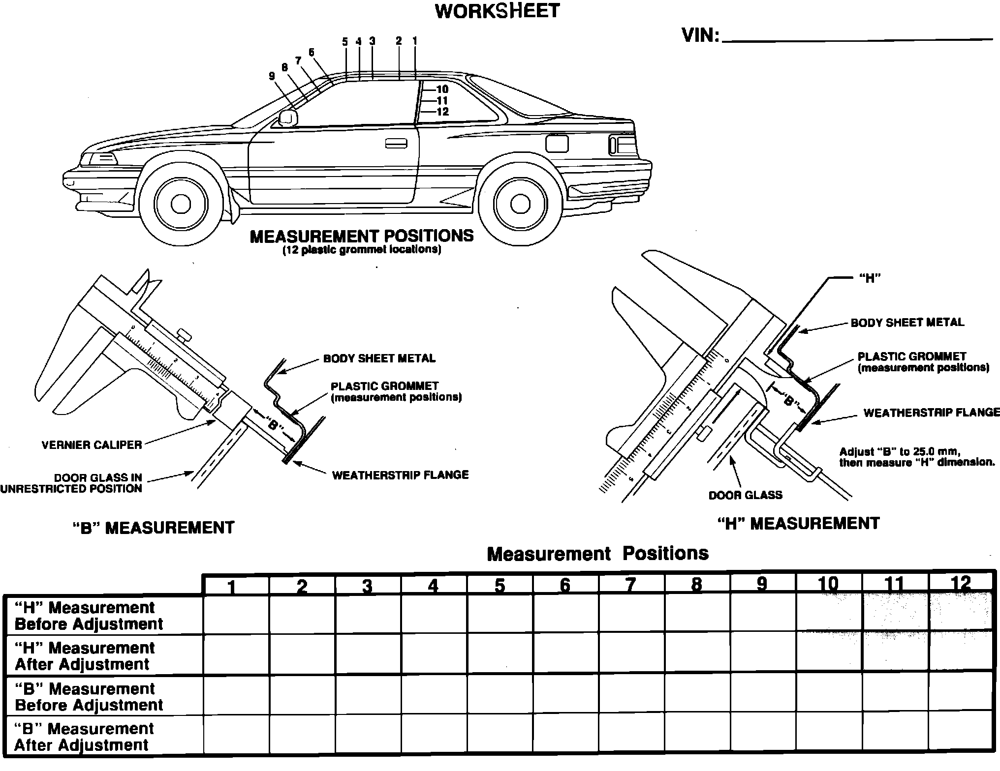

Operation CHARM
: Car repair manuals for everyone.
Home
>>
Acura
>>
1989
>>
Legend Coupe V6-2675cc 2.7L SOHC FI
>>
Repair and Diagnosis
>>
Technical Service Bulletins
>>
All Technical Service Bulletins
>>
Door Glass - Wind Noise
>>
Worksheet
Worksheet
